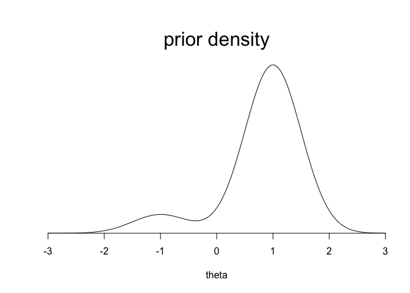
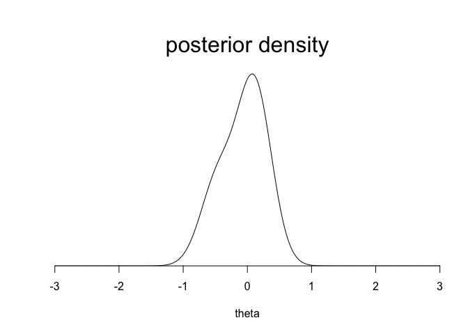
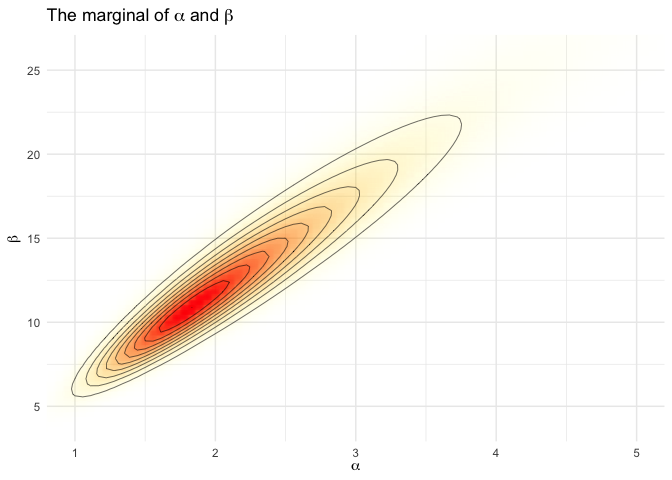

Bayes Statistics HW5
5-4.
5-4a
Yes. The joint distribution is
$\(p(\theta_1,..,\theta_{2J}) = {2J \choose J}(\prod_{j=1}^JN(\theta_{p(j)}|1,1)N(\theta_{p(j)}|-1,1))\)$,
where the sum is over all permutations p of (1,...,2J). The density above is obviously invariant permutations of the indexex (1,...,2J).
5-4b
The covariance of \(\theta_i, \theta_j\) is negative. If \(\theta_i\) is large, then it probably comes from the N(1,1) distribution, which means that it is more likely than not that \(\theta_j\) from the N(-1,1) distribution, which means that \(\theta_j\) will probably be negative. Conversely, if \(\theta_i\) is negative, \(\theta_j\) is most likely positive.
Then, \((\theta_1,..,\theta_{2J})\) can't be written as a mixture form.
5-4c
As \(J \rightarrow \infty\), the negative \(Cor(\theta_i,\theta_j)\) approaches zero, and the joint distribution approaches iid. To put it another way, the distinction disappears between independently assigning each \(\theta_j\) to one of two groups, and picking exactly half of the \(\theta_j\)'s each group.
5-5
Let \(\mu(\phi) =E(\theta_j|\phi)\).
5-7
5-7(a)
From formula (2.7), \(E(y) = E(E(y|\theta)) = \theta = \alpha/\beta\). Because \(y|\theta \sim Pois(\theta), E(y|\theta) = \theta\).
From formula (2.8),
$\(var(y)=E(var(y|\theta))+var(E(y|\theta))=E(\theta)+var(\theta)=\alpha/\beta+\alpha/\beta^2 = \alpha/\beta^2(\beta+1),\ var(y|\theta)=\theta\)$.
5-7(b)
To solve this problems, \(n,s, \bar{y}\) are essentially treated like constants.
From (2.7) and (3.3),
We must have \(n > 1\) for \(s\) to be defined, but in order for the expectation to exist, we must have \(n >2\).
We can compute from (2.8), (3.3), and (3.5) that
$\(E(\sigma^2|y)/s^2 =\frac{n-1}{n-3}\)$.
For this to work, we need \(n > 3\).
5-8
Let \(p_m(\theta|y)\) denote the posterior density of \(\theta\) corresponding to the prior density \(p_m(\theta)\).If \(p(\theta) = \sum_n\lambda_mp_m(\theta),\) the posterior density of \(\theta\) is proportional to \(\sum_m\lambda_mp_m(\theta)p(y|\theta)=\sum_m\lambda_mp_m(y)p_m(\theta|y):\) mixture of the posterior densities \(p_m(\theta|y)\) with weights proportional to \(\lambda_mp_m(y)\).
Since each \(p_m(\theta)\) is conjugate for the model for y given \(\theta\), the preceding computation demonstrates that the class of finite mixture prior densities is also conjugate.
Consider an example : \(p_1(\theta) \sim N(1,0.5^2), p_2(\theta) \sim N(-1,0.5^2)\), and suppose \(\lambda_1=0.9, \lambda_2=0.1\). We know that \(p_1(\theta|y) \sim N(1.5/14,1/14)\) and \(p_2(\theta|y) \sim N(-6.5/14,1/14)\). We also know \(p(\theta|y)\) will be a weighted sum of these conditional posterior densities with weights \(\lambda_mp_m(y)/\sum_k\lambda_kp_k(y)\) for \(m=1,2\).
\(p_1(y) = N(-0.25|1,0.5^2+1/10)=0.072\), and \(p_2(y) = N(-0.25|-1,0.5^2+1/10)=0.302\).
So the weights for \(p_1(\theta|y)\) and \(p_2(y)\) are not 0.9 and 0.1 but are, \(\frac{0.9\cdot0.072}{0.9\cdot0.072+0.1\cdot0.302}=0.68\) and \(\frac{0.1\cdot0.302}{0.9\cdot0.072+0.1\cdot0.302}=0.32\).
theta <- seq(-3,3,.01)
prior <- c (0.9, 0.1)
dens <- prior[1]*dnorm(theta,1,0.5) +
prior[2]*dnorm(theta,-1,0.5)
plot (theta, dens, ylim=c(0,1.1*max(dens)),
type="l", xlab="theta", ylab="", xaxs="i",
yaxs="i", yaxt="n", bty="n", cex=2)
mtext ("prior density", cex=2, 3)

marg <- dnorm(-.25,c(1,-1),sqrt(c(0.5,0.5)^2+1/10))
posterior <- prior*marg/sum(prior*marg)
dens <- posterior[1]*dnorm(theta,1.5/14,sqrt(1/14)) +
posterior[2]*dnorm(theta,-6.5/14,sqrt(1/14))
plot (theta, dens, ylim=c(0,1.1*max(dens)),
type="l", xlab="theta", ylab="", xaxs="i",
yaxs="i", yaxt="n", bty="n", cex=2)
mtext ("posterior density", cex=2, 3)

5-9
5-9a
Consider the limit \((\alpha+\beta) \rightarrow \infty\) with \(\alpha/\beta\) fixed at any nonzero value. The likelihood is
$\(=\prod_{j=1}^J(\frac{\alpha}{\alpha+\beta})^y_j(\frac{\beta}{\alpha+\beta})^{n_j-y_j}\)$,
which is constants, so the pior density determindes whether the posterior density has a finite integral in this limit. A uniform prior density on \(log(\alpha+\beta)\) has an infinite integral in this limit, and so the posterior density does also in this case.
5-9b
5-12
Applying formula (2.7) and (2.8),
$\(var(\theta_j|\tau,y) = E[var(\theta_j|\mu,\tau,y)|\tau,y]+var[E(\theta_j|\mu,\tau,y)|\tau,y]=\frac{1}{\frac{1}{\sigma^2}+\frac{1}{\tau^2}}+(\frac{\frac{1}{\tau^2}}{\frac{1}{\sigma^2}+\frac{1}{\tau^2}})^2V_\mu\)$, where expressions for \(\hat\mu=E(\mu|\tau,y)\) and \(V_\mu=var(\mu|\tau,y)\) are given in (5.20).
Ex: Hierarchical model for Rats experiment
library(ggplot2)
theme_set(theme_minimal())
library(gridExtra)
library(tidyr)
library(latex2exp)
y <- c(0,0,0,0,0,0,0,0,0,0,0,0,0,0,1,1,1,1,1,1,1,1,2,2,2,2,2,2,2,2,
2,1,5,2,5,3,2,7,7,3,3,2,9,10,4,4,4,4,4,4,4,10,4,4,4,5,11,12,
5,5,6,5,6,6,6,6,16,15,15,9,4)
n <- c(20,20,20,20,20,20,20,19,19,19,19,18,18,17,20,20,20,20,19,19,18,18,25,24,
23,20,20,20,20,20,20,10,49,19,46,27,17,49,47,20,20,13,48,50,20,20,20,20,
20,20,20,48,19,19,19,22,46,49,20,20,23,19,22,20,20,20,52,46,47,24,14)
x <- seq(0.0001, 0.9999, length.out = 1000)
bdens <- function(n, y, x)
dbeta(x, y+1, n-y+1)
df_sep <- mapply(bdens, n, y, MoreArgs = list(x = x)) %>%
as.data.frame() %>% cbind(x) %>% gather(ind, p, -x)
labs1 <- paste('posterior of', c('theta_j', 'theta_71'))
plot_sep <- ggplot(data = df_sep) +
geom_line(aes(x = x, y = p, color = (ind=='V71'), group = ind)) +
labs(x = expression(theta), y = '', title = 'Separate model', color = '') +
scale_y_continuous(breaks = NULL) +
scale_color_manual(values = c('blue','red'), labels = labs1) +
theme(legend.background = element_blank(), legend.position = c(0.8,0.9))
# The last one is for emphasize colored red
plot_sep

df_pool <- data.frame(x = x, p = dbeta(x, sum(y)+1, sum(n)-sum(y)+1))
plot_pool <- ggplot(data = df_pool) +
geom_line(aes(x = x, y = p, color = '1')) +
labs(x = expression(theta), y = '', title = 'Pooled model', color = '') +
scale_y_continuous(breaks = NULL) +
scale_color_manual(values = 'red', labels = 'Posterior of common theta') +
theme(legend.background = element_blank(), legend.position = c(0.7,0.9))
grid.arrange(plot_sep, plot_pool)

A <- seq(0.5, 6, length.out = 100)
B <- seq(3, 33, length.out = 100)
cA <- rep(A, each = length(B))
cB <- rep(B, length(A))
lpfun <- function(a, b, y, n) log(a+b)*(-5/2) +
sum(lgamma(a+b)-lgamma(a)-lgamma(b)+lgamma(a+y)+lgamma(b+n-y)-lgamma(a+b+n))
lp <- mapply(lpfun, cA, cB, MoreArgs = list(y, n))
df_marg <- data.frame(x = cA, y = cB, p = exp(lp - max(lp)))
title1 <- TeX('The marginal of $\\alpha$ and $\\beta$')
ggplot(data = df_marg, aes(x = x, y = y)) +
geom_raster(aes(fill = p, alpha = p), interpolate = T) +
geom_contour(aes(z = p), colour = 'black', size = 0.2) +
coord_cartesian(xlim = c(1,5), ylim = c(4, 26)) +
labs(x = TeX('$\\alpha$'), y = TeX('$\\beta$'), title = title1) +
scale_fill_gradient(low = 'yellow', high = 'red', guide = F) +
scale_alpha(range = c(0, 1), guide = F)

nsamp <- 100
samp_indices <- sample(length(df_marg$p), size = nsamp,
replace = T, prob = df_marg$p/sum(df_marg$p))
samp_A <- cA[samp_indices[1:nsamp]]
samp_B <- cB[samp_indices[1:nsamp]]
df_psamp <- mapply(function(a, b, x) dbeta(x, a, b),
samp_A, samp_B, MoreArgs = list(x = x)) %>%
as.data.frame() %>% cbind(x) %>% gather(ind, p, -x)
indtonum <- function(x) strtoi(substring(x,2))
title2 <- TeX('Beta($\\alpha,\\beta$) given posterior draws of $\\alpha$ and $\\beta$')
plot_psamp <- ggplot(data = subset(df_psamp, indtonum(ind) <= 20)) +
geom_line(aes(x = x, y = p, group = ind), color='forestgreen') +
labs(x = expression(theta), y = '', title = title2) +
scale_y_continuous(breaks = NULL)
df_psampmean <- spread(df_psamp, ind, p) %>% subset(select = -x) %>%
rowMeans() %>% data.frame(x = x, p = .)
title3 <- TeX('Population distribution (prior) for $\\theta_j$')
plot_psampmean <- ggplot(data = df_psampmean) +
geom_line(aes(x = x, y = p), color='forestgreen') +
labs(x = expression(theta), y = '', title = title3) +
scale_y_continuous(breaks = NULL)
grid.arrange(plot_psamp, plot_psampmean)

plot_sep7 <- ggplot(data = subset(df_sep, indtonum(ind)%%7==0)) +
geom_line(aes(x = x, y = p, color = (ind=='V49'), group = ind)) +
labs(x = expression(theta), y = '', title = 'Separate model', color = '') +
scale_y_continuous(breaks = NULL) +
scale_color_manual(values = c('blue', 'red'), guide = F) +
theme(legend.background = element_blank(), legend.position = c(0.8,0.9))
bdens2 <- function(n, y, a, b, x)
rowMeans(mapply(dbeta, a + y, n - y + b, MoreArgs = list(x = x)))
df_hier <- mapply(bdens2, n, y, MoreArgs = list(samp_A, samp_B, x)) %>%
as.data.frame() %>% cbind(x) %>% gather(ind, p, -x)
plot_hier7 <- ggplot(data = subset(df_hier, indtonum(ind)%%7==0)) +
geom_line(aes(x = x, y = p, color = (ind=='V49'), group = ind)) +
labs(x = expression(theta), y = '', title = 'Hierarchical model', color = '') +
scale_color_manual(values = c('blue', 'red'), guide = F) +
scale_y_continuous(breaks = NULL) +
theme(legend.background = element_blank(), legend.position = c(0.8,0.9))
grid.arrange(plot_sep7, plot_hier7)

qq_separate<-data.frame(id=1:length(n), n=n, y=y,
q10=qbeta(0.1,y+1,n-y+1), q90=qbeta(0.9,y+1,n-y+1))
qh <- function(q, n, y) colMeans(mapply(function(q, n, y, a, b)
mapply(qbeta, q, a + y, n - y + b), q, n, y, MoreArgs = list(samp_A, samp_B)))
qq_hier <- data.frame(id=1:length(n), n=n, y=y,
qh(0.05, n, y), qh(0.95, n, y))
ggplot(data=qq_separate[seq(1,length(n),by=3),], aes(x=jitter(n,amount=1),ymin=q10,ymax=q90)) + geom_linerange() + xlim(c(0,60))